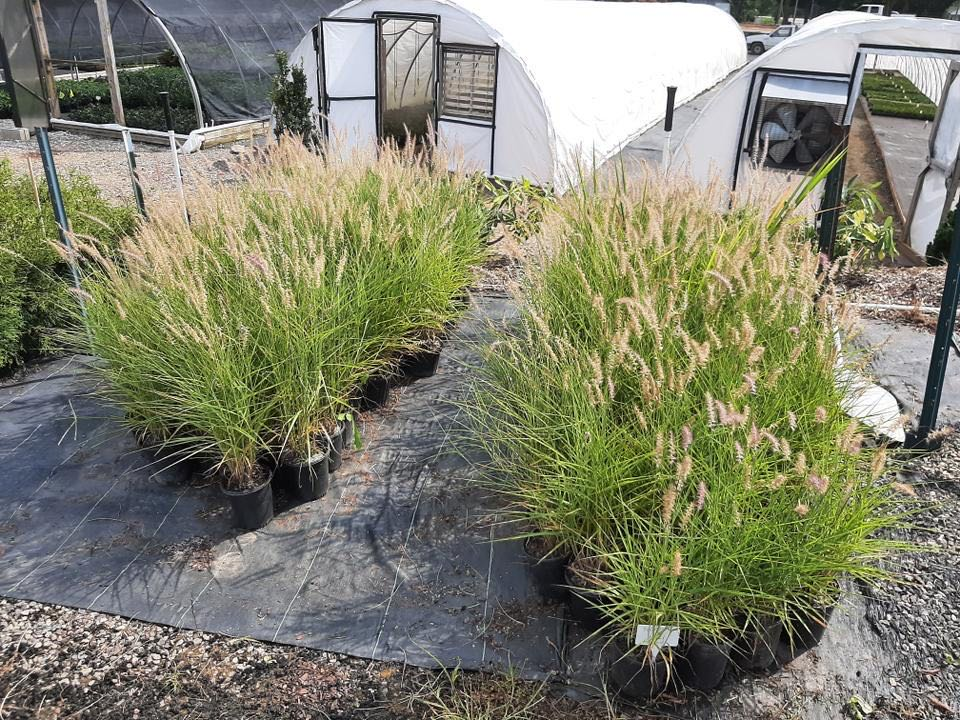
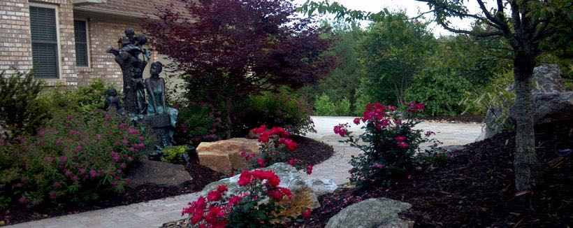
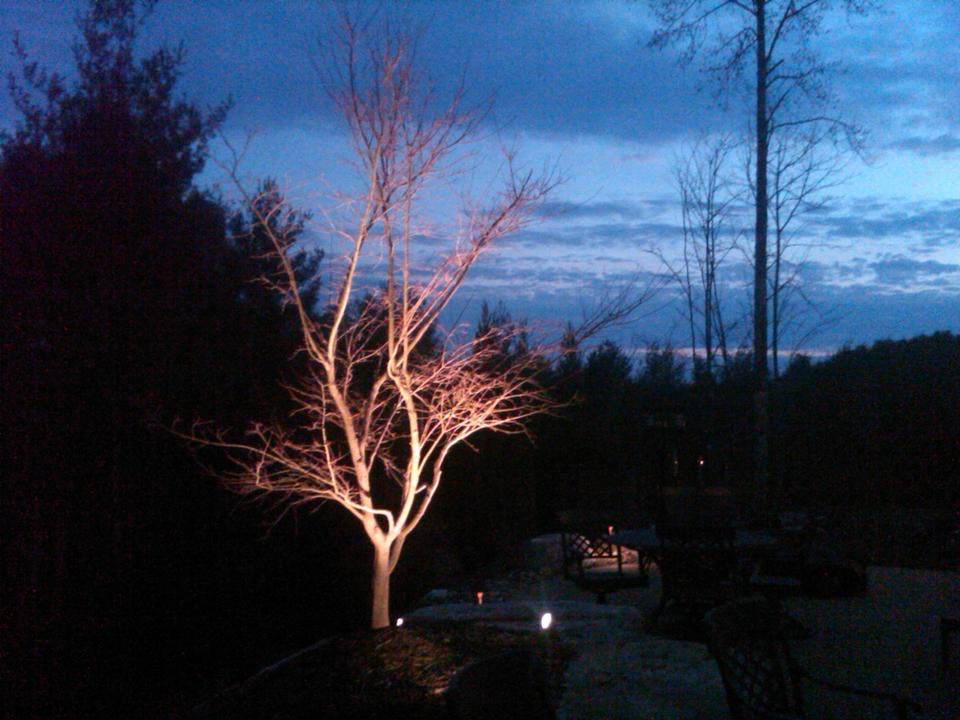
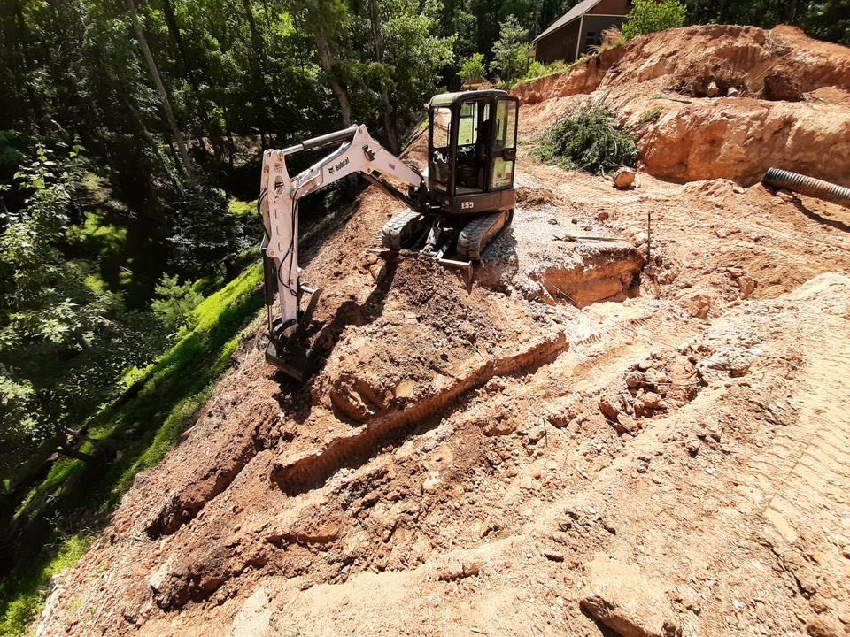
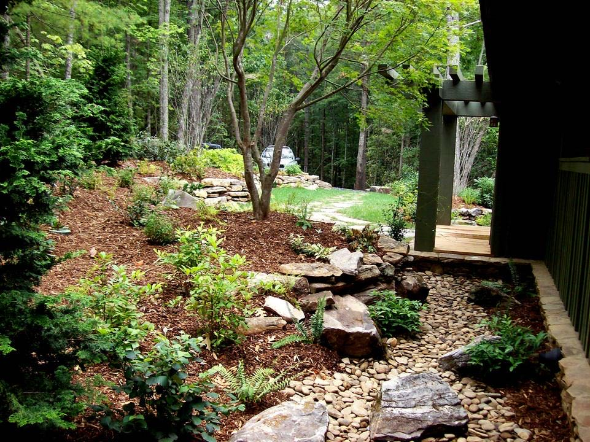
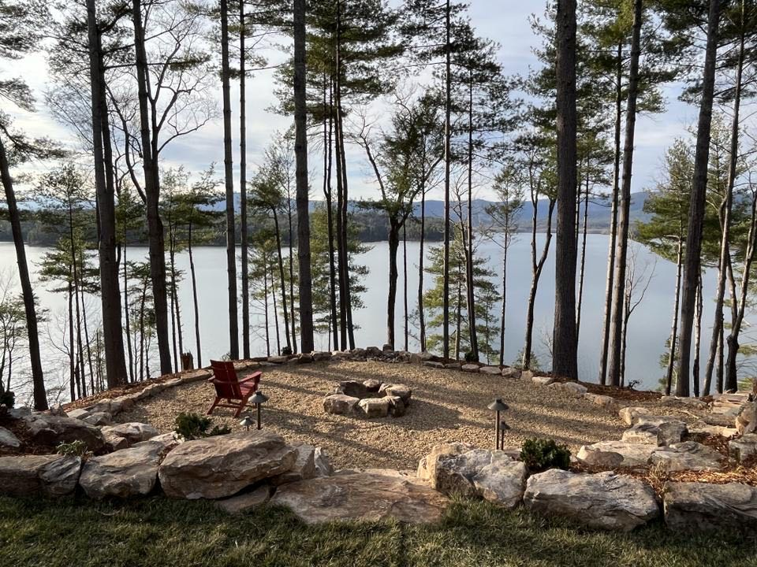
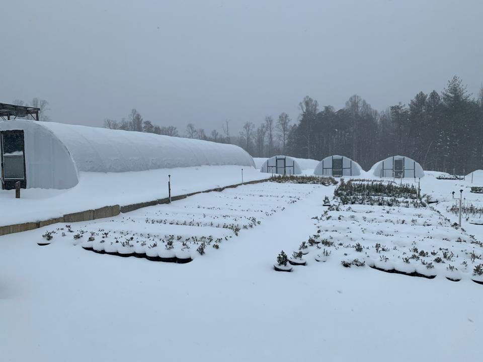
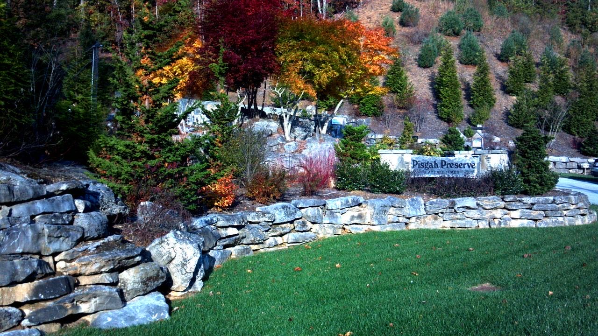

Mowing
From roadways and pattern stripes for residential lawns to bush hogging fields.
Services · Morganton & western NC
One team that draws the plan, sets the boulders, plants the trees and comes back to care for them – with plants grown at our own nursery.


01 · Design services
We design with landscape CAD software adapted to our growing zone, using symbols created in house. Once you approve the drawing, the install manager, production manager and designer sit down together and layer in notes, measurements and lighting so the crew leader can carry the crew across the finish line.
It can be as personal as you like – or simply “make it work and beautiful.” Either way we consider drainage, slopes, curb appeal, specialized plant selection, and how vehicles and people move through the property.


02 · Installation
Installing these landscapes takes a whole range of skills. Specimen boulders are placed with meticulous care – fieldstones that still carry their moss and lichen, so a new garden looks like it has always been there.


03 · Slopes, grading & drainage
Here in the foothills many homes are built on or near slopes. Access, circulation and drainage are the three essentials, and proper grading brings them together – clients are often amazed at the difference before the first plant goes in.
Drainage doesn’t have to be just functional. Many of our stream beds hide French drains under the decorative stone, moving volumes of water out of the space quickly.


04 · Hardscapes, walls & steps
Our crews have mastered pavers, brick, tumbled pavers, quarried stone, fieldstone slabs and mixed materials. Walls go in where elevations change or where they add something: boulders, dry stack, stacking rock or modular block, each in the right context.
05 · Quality maintenance
Maintenance is a big part of bringing a vision to life. We keep turf on the flatter ground, plants and mulch on the banks, and choose the right plant for each micro-climate.
From roadways and pattern stripes for residential lawns to bush hogging fields.
Fertilizer applied at the right time for turf and plants – healthy growth is the best way to prevent pests and disease.
Covers exposed soil, builds topsoil as it breaks down, keeps weeds down and gets new plantings through the July and August dog days.
Five NC licensed pesticide applicators and periodic programs that rely on good design and mulching first.
Two ISA certified arborists on staff for the trees that frame your property.
Food plots, fruit and mast trees and forestry techniques for deer, turkey and songbirds – on one acre or a hundred.
How a project runs
Call to schedule an initial visit and walk the property together.
CAD blueprints for discussion, revised until you agree with the drawing.
Install, production and design managers plan the schedule, measurements and logistics.
Grading and hardscapes first, then plants – and maintenance as the landscape matures.


06 · Our nursery
Many of the plants we use are difficult to find in the local nursery industry, so we grow a wide variety ourselves. Our sister company, Wind River Growers, LLC, shares the property and offers hard-to-find plants online.
Growing, shipping, handling and holding plants properly is directly related to their survival – and it is why we can plant twelve months of the year.
Careers
We accept applications year round, are always looking for drivers with a clear driving history, and are a drug-free workplace. Install: terrel@ · Maintenance: (828) 333-2814.